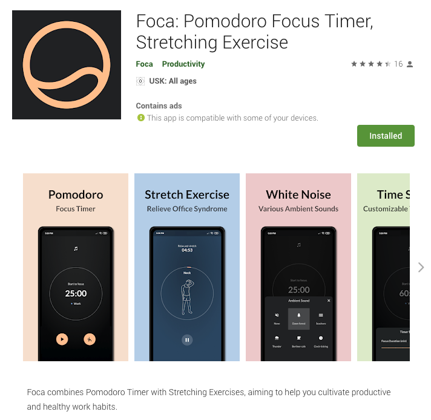

What is foca
Foca is an App me and my friend Raphael created from scratch. We ideated, designed, developed and released the App from scratch. It combines Pomodoro technique with stretching exercises, aiming to help users cultivate a productive and healthy work habits.
Now it has been launched to over 150 countries, and it has over 500 downloads in Google play.

BACKGROUND
The covid-19 pandemic makes remote work become a trend. Governments and companies offer policies and infrastructure to support working remotely. As the graphs below indicate, over half of the participants stated that they were totally working remotely. They also stated that the main struggles with working remotely include hard to unplug and distractions at home.
Resulting from the pandemic, both of me and a friend of mine started to remote work since early 2020. Similar to many of the others, we found it hard to stay concentrated at home. Moreover we had some neck and back pain lacking of exercise. We talked about these problems, and thought maybe we could create an App that helps people to become more productive an healthy when working remotely.
Project Roadmap
After the initial idea, we started to plan the project roadmap. First of all, we need to validate the problem and create a design solution. Then to build the MVP and release the initial version. Afterwards, we would collect the feedback and iterate on the products. As the product becomes better and better, it will have an organic growth of users. Later on we can monetize from either Freemium or ads.
I take the main responsibility for the product design and management, while my friend in charge of App development. Actually none of us had experience of independent App development before. So we spent one month to learn Flutter, which is a cross-platform language to build native Apps on Android and iOS from a single Codebase. We designed and developed the App within three months and had the initial release to Google Play in July 2020.
research & PROBLEM VALIDATION
Interviews
Julian is a product designer living in Berlin. He spent 100% his work time at home.
"It's very hard to stay concentrate on work at home, since there is not a clear boundary between work and life. There are too many distractions, like Youtube, Netflix, Instagram, Facebook... I really need some tools to help me become more focused and productive."
"I used to play tennis before. However, the courts are closed because of the pandemic... Sometimes I feel pain in my hands and fingers because of using the mouse too much."
Fiona is a biology Phd worker in Switzerland. Currently she works on her research paper. She spent 70% of her work time at home and 30% in the lab.
"I have lots of time to work on my research paper. To have a better use of the time, I have tried some time management tools. For instance, I have tried an App named 'Forest' to help me stay focused using a Timer. It was interesting at the beginning, but I deleted the App after a while since the App gives me a feeling like a control freak."
"I have some neck and shoulder problems for a long time... I really need to remind myself to stretch out and do more exercise."
Time Management & Pomodoro Technique
I looked up online to find time management methods. One of the most popular ones is the Pomodoro technique. It breaks down a long work time into smaller chunks. Basically you set the timer for 25 minutes and stay focused during the time. After the focus session, you can take a rest as a small reward. Then you continue the next iteration. I tried it myself and found it improved my productivity when working at home.
Competitor & Market Analysis
I searched for the key words “Pomodoro”, “focus” and “productivity” in App stores. Below are some of the top ranked apps in the markets. From the number of downloads we can tell that it’s a million scale market.
Then I downloaded these Apps and tried it out myself. As the picture shows, I analyzed these Apps from multiple perspectives, from the top visual layer to the bottom scope layer. The analysis helps me to find opportunities and position our product.
Problem Definition
- Difficult to stay focused, especially when working at home.
- Difficult to manage time and improve productivity.
- Pains and stiffness in neck, shoulders, hands and back.
- Lack of exercises and stretches during the quarantine.
app DESIGN
After the research and problem validation, I started to design the App. First of all, I establish the three design principles of the App based on previous findings. The App should apply minimum design and intuitive to use. Also it should help users to form habits.
Feature Prioritize
We listed the features we want to have after brainstorming and research. Then we prioritize the features according to its importance and feasibility. The ones with orange stickers were the features we would implement in our initial release. We would build a pomodoro timer with customizable time settings. We would create stretch exercise instructions to inform users stretch out during break. Moreover, we would provide background noise which helps with concentration. Also the statistic reports can motivate users and help habit forming.
User Flow
Then I started to design the UI and user flows. The main flows are as shown below.
1. Focus session: users can start a focus session immediately after opening the App. The UI has dark background with minimum design, which reduces distractions.
2. Focus experience customization: users can adjust the time duration based on their preferences. They can also select an ambient sound which helps them to focus. Moreover, they can select a tag to categorize the task that they work on.
3. After a focus session, they can select to take a break, stretch out or skip the break.
4. The statistic page keeps track of the users' focus time. They can have an overview of their focus performance overtime. The numbers and graphs can motivate users to form habits.
Stretch Illustrations
To tackle the problem about office syndrome, we created a stretch instruction, so that users can choose to stretch out during the break. I drew the stretch illustrations and made some simple animations. Users can follow these illustrations and the training sounds to stretch out.
MVP BUILDING
After having the design ready, me and my friend started develop the App. Below are the main tools we used during the MVP building stage. We utilized Kanban board in Notion to manage the tasks and documentation. We developed the App using Flutter in VS Code and Github. My friend Raphael took the major responsibility for App developing, while I supported him on front-end layout and visual components.
INITIAL RELEASE
After three months of development, we had our MVP ready. We conducted three internal tests and then released it to Google Play in July 2020. (Actually we intended to release it to Apple Store as well in the beginning. But we realized there were some technical limitations which prevented us from releasing to iOS users).
At the beginning, it was mainly our friends who knew about it and used it. They said it was very helpful and they really liked it. Later on, it grows organically. Some friends recommend the App to their friends to use. Also, we saw there were more and more downloads coming from searching the key words in Google Play.
User Reviews
insights & ITERATION
After collecting the user feedback, I extracted some insights from the research. And I iterated the design based on that.
deal with challenge
The first major setback we encountered was the launch of the Apple market. At the beginning, we chose to use Flutter to develop, mainly because it is compatible with Android and Apple. We only need one set of code to be able to put on the two mainstream markets at the same time. In the early days, we mainly used Android for testing. Soon after we started to use Apple for testing, we realized the background running problem which there was no quick solution. That's why we only launched it in Google Play so far.
The second difficulty is to solve the problem of low application stability. It is often killed when running in the background. If the phone is old and has low memory, it is easier for the system to stop Foca. Our app has been rated very well in the early stage of its launch, and it was once maintained at around 4.8. However, due to stability reasons, we were given two negative reviews. In the feedback, users complained that it suddenly stopped when it was running halfway through, and the experience was very bad. So our rating dropped to 4.4 all at once... I quickly responded to the problem, and listed the solutions we had:
Short-term solution
Provide instructions to setup, in order to improve stability, as the design shows besides.
Long-term solution
Improve back-end coding. It might take some time for the developer Raphael to debug and improve coding stability.
outcome
User Growth after Initial Release
User Ratings from the world

THOUGHTS AND LEARNINGS
Even in a small team of two people, communication is still very important. In many cases, opinions are not unified, and the information received is not equal. Because I have done a lot of user interviews, and I pay a lot of attention to comments and feedback. But this part of the information program partners may not know. This leads to our frequent disagreements. It is easy to substitute your own subjective feelings. So later on I shared the collected user research information with my peers in time. Both positive and negative will be shared. Positive feedback is a great affirmation for us and a motivation to continue to sit down. Negative feedback allows us to discover the problem and the direction for improvement.
In this project, I have taken multiple responsibilities beyond just being a designer. I feel it's more suitable to call myself as a product creator in this case. I believe in the value of the product and always feel motivated to make it better. This makes me think about my career choice in the future. When I have to make career decisions, I should ask myself: do you really love the product you are going to design and agree with the values behind it? If not then there should be a second thought. If the answer is yes, then definitely go for it!